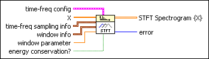
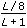
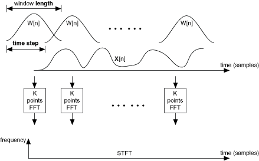
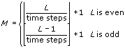
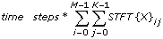
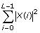
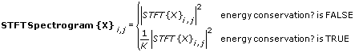
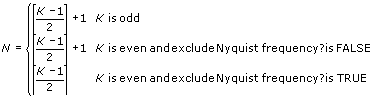
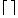

STFT Spectrograms VI
Owning Palette: Spectral Analysis VIs
Requires: Full Development System
Computes the signal energy distribution in the joint time-frequency domain, using the short-time Fourier transform (STFT) algorithm.
Details Example

 Add to the block diagram Add to the block diagram |
 Find on the palette Find on the palette |
 |
time-freq config specifies the configuration of the frequency bins. time-freq config also determines the number of columns in STFT Spectrogram {X}.
 |
force freq bins to power of 2? specifies whether to coerce the frequency bins to a power of 2. If force freq bins to power of 2? is TRUE and frequency bins is not a power of 2, this VI sets frequency bins to the nearest power of 2. The default is TRUE.
|
|
exclude Nyquist frequency? specifies whether to exclude the energy at the Nyquist frequency from STFT Spectrogram {X}. If frequency bins is even and exclude Nyquist frequency? is TRUE, STFT Spectrogram {X} does not include the energy at the Nyquist frequency. If frequency bins is odd, LabVIEW ignores exclude Nyquist frequency?. The default is TRUE.
|
|
 |
X specifies the input time-domain signal.
|
 |
time-freq sampling info specifies the density to use to sample the signal in the joint time-frequency domain and defines the size of the resulting 2D time-frequency array.
 |
time steps specifies the number of samples to shift the sliding window. When time steps is less than or equal to zero, this VI adjusts time steps automatically so that no more than 512 rows exist in STFT Spectrogram {X}. The default is –1
|
|
frequency bins specifies the FFT size of the STFT. If frequency bins is less than or equal to zero, this VI sets frequency bins to 512. If frequency bins is 1, this VI coerces frequency bins to 2. The default is 512.
|
|
|
window info specifies information about the window you want to use to compute the STFT.
 |
type specifies the type of window to use to compute the STFT. The default is Hanning.
| 0 | Rectangle | | 1 | Hanning | | 2 | Hamming | | 3 | Blackman-Harris | | 4 | Exact Blackman | | 5 | Blackman | | 6 | Flat Top | | 7 | 4 Term B-Harris | | 8 | 7 Term B-Harris | | 9 | Low Sidelobe | | 11 | Blackman Nuttall | | 30 | Triangle | | 31 | Bartlett-Hanning | | 32 | Bohman | | 33 | Parzen | | 34 | Welch | | 60 | Kaiser | | 61 | Dolph-Chebyshev | | 62 | Gaussian |
|
|
length specifies the length of the window in samples. If length is less than or equal to zero, this VI sets length to 64. The default is 64.
|
|
 |
window parameter is the beta parameter for a Kaiser window; the ratio, s, of the mainlobe to the sidelobe for a Dolph-Chebyshev window; and the standard deviation for a Gaussian window. If the window type is any other window, this VI ignores this input. The default value of window parameter is NaN, which sets beta to 0 for a Kaiser window, s to 60 for a Dolph-Chebyshev window, and the standard deviation to  for a Gaussian window, where L is the window length.
|
|
energy conservation? specifies whether to scale STFT Spectrogram {X} so that the energy in the joint time-frequency domain equals the energy in the time domain. The default is TRUE.
|
 |
STFT Spectrogram {X} is a 2D array that describes the time waveform energy distribution in the joint time-frequency domain.
|
 |
error returns any error or warning from the VI. You can wire error to the Error Cluster From Error Code VI to convert the error code or warning into an error cluster.
|
To compute STFT Spectrogram {X}, this VI first computes the STFT of X. To compute the STFT of X, this VI uses a sliding window to divide the signal into several blocks of data. The VI then applies an N-points fast Fourier transform to each block of data to obtain the frequency contents of each block of data, where N is frequency bins. The STFT aligns the center of the first sliding window with the first sample of the signal X and extends the beginning of the signal by adding zeros. The sliding window moves time steps samples to the next block of data. If the window moves out of X, this VI pads X with zeros.
The following illustration shows the procedure this VI uses to compute the STFT.

If force freq bins to power of 2? is TRUE, and frequency bins is not a power of 2, then the following equation also is true:
K = 2[log2(frequency bins)]
where [ ] is the nearest operation.
Otherwise, K = frequency bins.
If the result of the STFT is the matrix STFT{X}, then the size of STFT{X} is M-by-K, where the following are true:
- 
- L is the number of elements in X
 is the round down operation
is the round down operation
You can use STFT{X} to approximate the energy in the joint time-frequency domain using the following expression:

This result almost equals the energy in the time domain, as shown in the following expression:

After computing the STFT of X, this VI computes the STFT spectrogram of X. This VI calculates STFT spectrogram as the magnitude square of the elements in STFT{X}. Because the FFT returns symmetric results, this VI calculates the STFT Spectrogram {X} only on the left half of STFT{X}, as shown in the following equation:

where the following are true:
- i = 0, 1, ..., M–1
- j = 0, 1, ..., N–1
- 
-  is the round up operation.
If you specify a small value for time steps, the VI might return a large spectrogram, which requires a long computation time and more memory. National Instruments recommends you set time steps so that the number of rows in spectrogram does not exceed 512. If you need a small sampling rate to observe more details and the signal length is large, divide the signal into smaller segments and compute the spectrogram for each segment.
The window length affects the time resolution and the frequency resolution of the STFT. A narrow window results in a fine time resolution but a coarse frequency resolution because narrow windows have a short time duration but a wide bandwidth. A wide window results in a fine frequency resolution but a coarse time resolution because wide windows have a long time duration but a narrow frequency bandwidth.
This VI returns the same result as the TFA STFT Spectrogram VI in the LabVIEW Advanced Signal Processing Toolkit if you set force freq bins to power of 2?, exclude Nyquist frequency?, and energy conservation? to TRUE.
Refer to the STFT Spectrogram Demo VI in the labview\examples\Signal Processing\Transforms directory for an example of using the STFT Spectrograms VI.
 Open example Find related examples
Open example Find related examples